interactional application for Ukkonen algorithm
Ukkonen algorithn is a linear-time method for creating a suffix tree wiki page
Here is an example for of a suffix tree for a word 'mississipi':
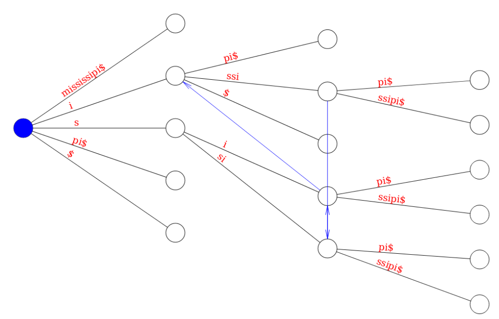
Suffix tree for "mississipi" word
The main advantage of it is that you can get any suffix of a word going from the root of the tree.Basic bricks.
The algorihm performs 3 basic steps, which are:- 1) Extending path label in leaf edges.
- 2) A new leaf node creation
- 3) Move within a trie.
First step is done for every letter added to the trie (but the first one since we have nothing to expand), second and third might go with any combination.
Let's go through examble to get initial grasp of the algorithm.
Let's build the trie for a word: "abcax"
1) adding 'a' to an empty trie.
Here we have rule 2 only.
2) adding 'b' - rule 1 - extending path of leaf nodes - rule 2 - add a new node
3) adding 'c' - rule 1 - extending path of leaf nodes - rule 2 - add a new node
4) adding 'a'
- rule 1 - extending path - rule 3 - move within a trie. From our initial position (root) now we have a path to go by - branch "abc". Now we "stand" on a letter 'a' of 'abc' branch.
5) adding 'x'
- rule 1 - extending path - rule 2 - add a new node. Here we add a new node while "standing" within an edge. By adding a new node we split the existing one. Additionally, we add new node to the root node, but so far let's ignore it.
To put it simply:
- - extend leaf nodes every time we put new letter to the trie. That step is mandatory for every new letter
- - pointer is within a branch and the next letter in a branch is a letter we add to the extend the trie 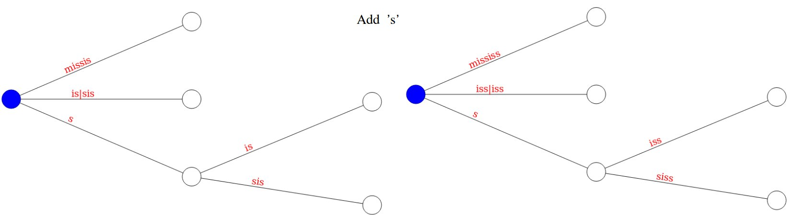
- - step onto next branch if there is next one which starts with a letter we currently processing
- - split current branch if a pointer stays in the middle of a branch and the next letter is not the same as the trie expanded with 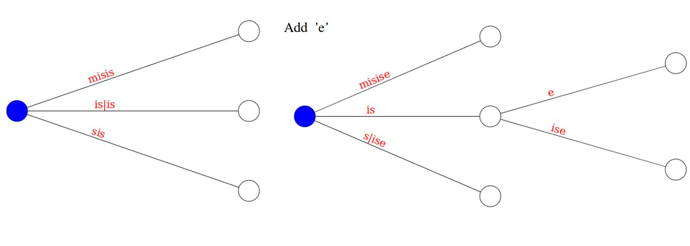
- - add new node if a pinter stays in node and there is no branch that starts with the letter we expand with 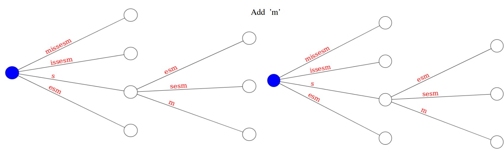
moving within branch

progress to the next branch
split a branch
add new node
Here are very basics of the algorithm. We have more conceptions here to come. At the moment I'd strongly reccomend you to take a sheet and a pencil and exercise a bit to be sure you lerned that by heart. Let the new knowledge flow into your brain and form pattern. Here is some words to train: "trre", "trtre", "abcabd". You can check if the trie is correct by traversing the trie by every its suffix. Keep that feature in mind, it is important.
Nice, mate, now you are ready to proceed. Let's build up "abcax" tree once more:
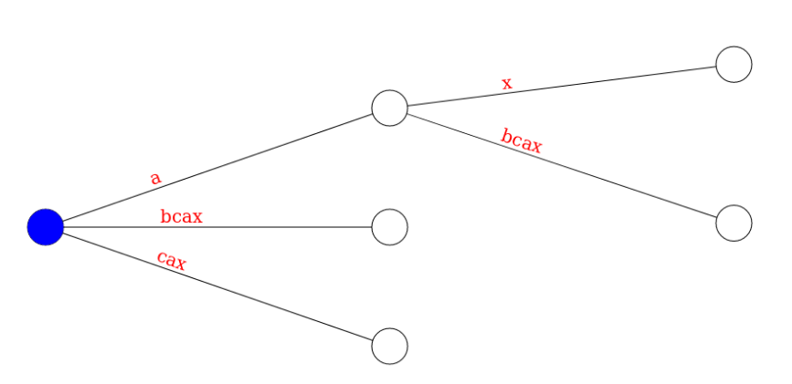Lets expand it further: "abcaxab"
After splitting a node we return to the root (mind you, it won't be the universal case).
A diligent reader might have a remark: "Hey, you told that the correct trie should be traverse by all suffixes. What about 'x'?"
Yes, it a valid assuption. I don't want to get deep into detail at the point, let's just go to root and add 'x'.
After that we stay on root.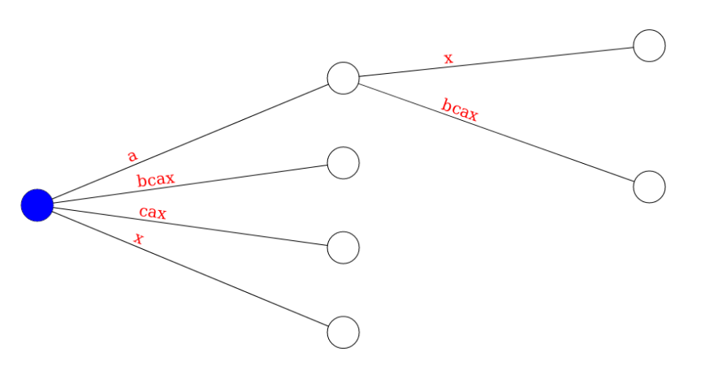
6) adding 'a'
- - rule 1 expanding leaf nodes.
- - rule 3 move within a trie.
7) adding 'b'
- - rule 1 expanding leaf nodes.
- - rule 3 move within a trie.
We get to the end of edge and jumped to the next edge.
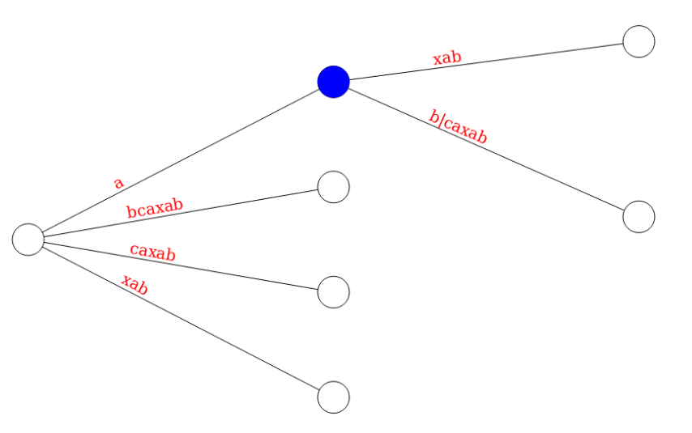
At the point that "jump" is a new thing for you. Think of it on your own.
Adding several nodes for the same letter
Ok, now try adding a new letter to our trie. For instance 'd'.
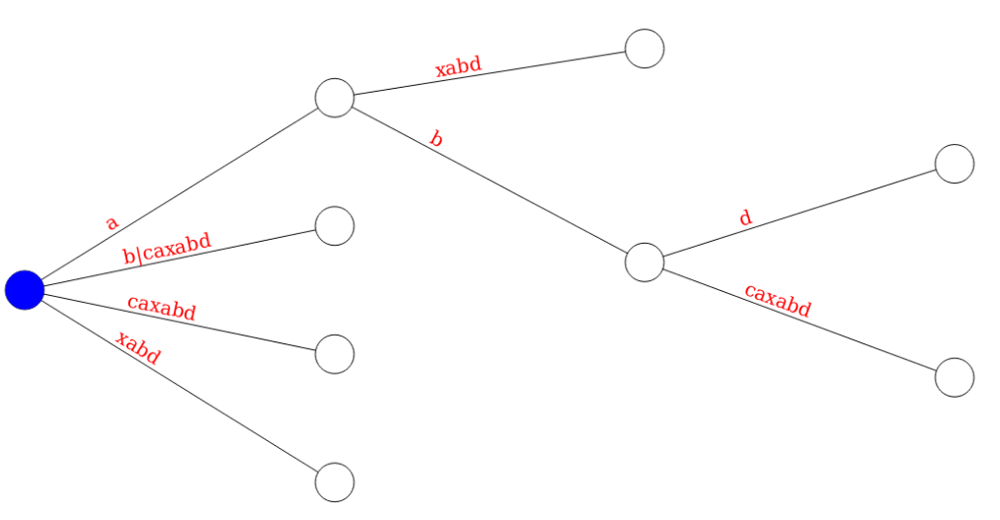
Here we should add a few more 'd' nodes so that suffix trie meets condition of every suffix trie
(abcaxabd, bcaxabd, caxabd, axabd, xabd, abd, bd, d).- abcaxabd - traverse 'a' -> bcaxabd
- bcaxabd - traverse bcaxabd
- caxabd - traverse caxabd
- axabd - traverse 'a' -> xabd
- xabd - traverse xabd
- abd - traverse a -> b -> d
- bd - traverse b -> d ???
- d - traverse d?
Adding bd
Ok, here is the hard part comes. To add the new node, we do the following things:- - increment index of suffix' start index.
- - decrement local index (the index we stand on) of an edge. That thing is optional, depends on implementation. I have used global index.
Think of it within the context: we've just added abd, we wanna add "bd". THINK. Let's decrement local index. It is zero now, that means that we have to switch active node to our parent Whitch is root. We have to add a length of edge to out local index (THINK). Incrementing suffix' index means we switch current branch to the one that starts with 'b', out local index is 1.
Here we activate: 7) adding 'd'- - rule 1 expanding leaf nodes.
- - rule 2 add new node.
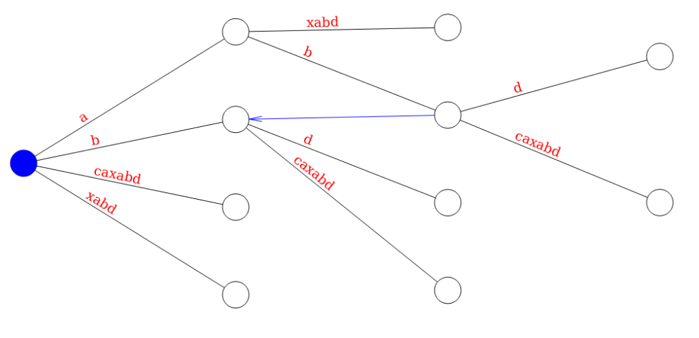
the only thing remains is adding 'd' suffix. As was mentioned above, To add the new node, we do the following things:- - decrement local index (the index we stand on) of an edge
- - increment index of suffix' start index.
- - rule 1 expanding leaf nodes
- - rule 2 add new node
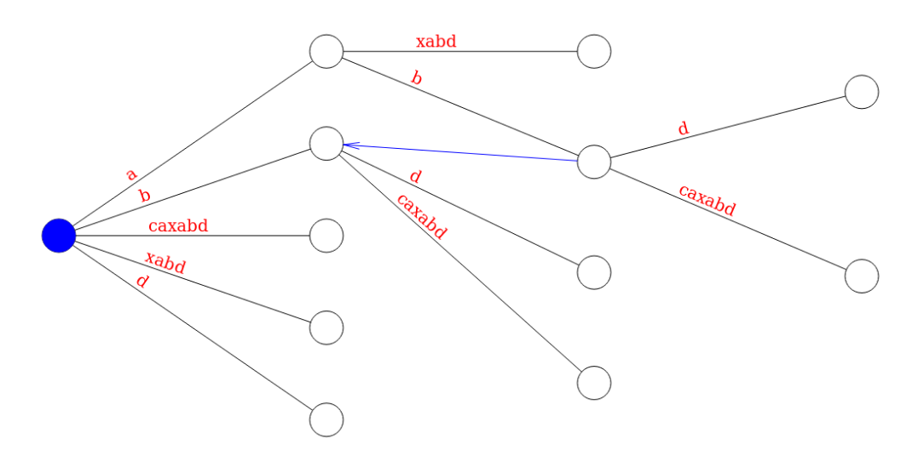
Conceptions: suffix reference
While building up a tree we employ the concept of suffix reference.
Suppose we have 2 suffixes:
- abc *remaining string*
- bc *remainig string (same) *
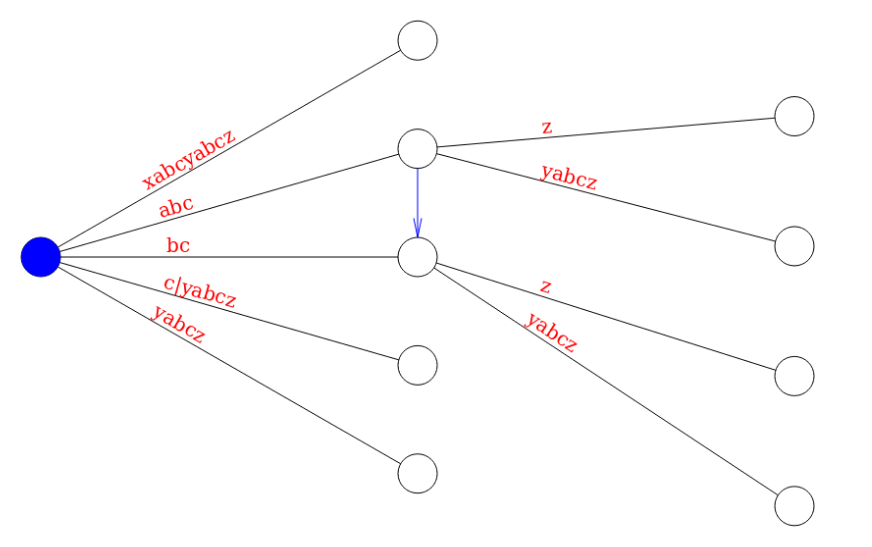
suffix reference for "xABCyABCz
The longer suffix refers to the shorter one. That reference means that we going to extend both branches similarly. Think of it the following way: we first add suffix "abcz", then "bcz", and thenever we add a node to "abc", the algorithm adds it to "bc" The example of it is on the picture below: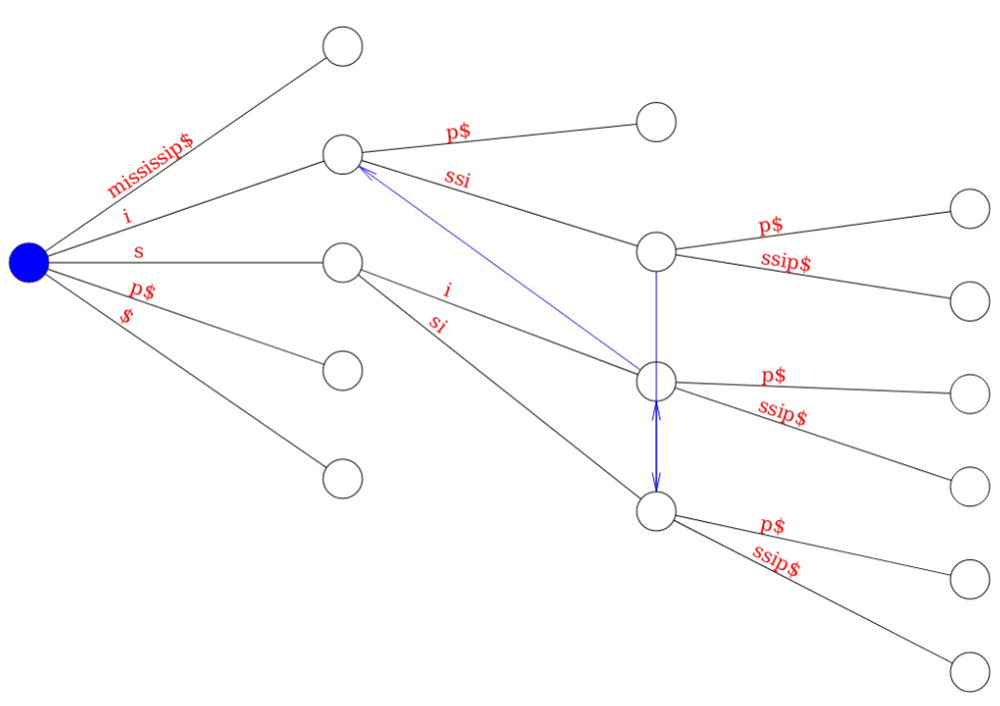
Check the branches issi and ssi. They have the same continuation, and it is not a coincidence. in that case "issi" branch has a suffix reference to "ssi". That causes them to have the same subtrie.The following code does that switching:
First 'if' checks if we have a branch for suffix that starts with prefix i+1, where i is index of a branch we just have split. In case there is no branch for the i+1 index, algorithm jumps onto suffix ref, that we learned about before.Suffix reference creation
Suffix reference of particular branch which represents (i, n) suffix is a reference to the branch that represents (i, n) suffix. Let's take a look on "mississipi" Example: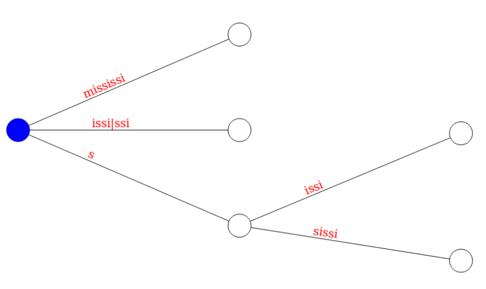
Last 4 characters 'issi' we were climbing up onto 'i' branch. So by the moment we don't have any branches for 'issi', 'ssi', 'si', 'i' suffixes. Think of it some time. Now we gonna add 'p' letter that is unique for now and that triggers creation of all these suffixes. So 1st step is to add "issi" suffix: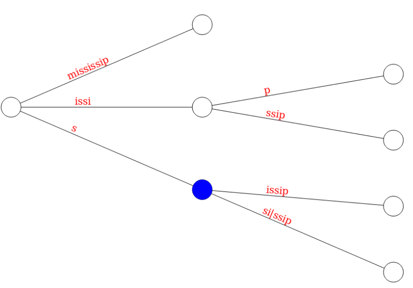
See we created "issi" branch? So the next step is to make "ssi". Now algoritm should somehow do "ssi" for root (get onto 's' branch and onto 'sissip' later). Now we split 'sissip' branch.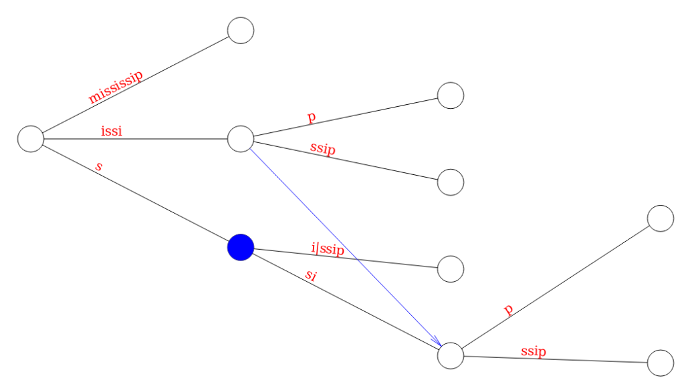
Now we arranged "ssi" branch. At the moment we point suffix reference of "issi" node to "ssi" node. Now you, reader, should get it. Next step is to create "si" and put suffix reference of "ssi" onto "si".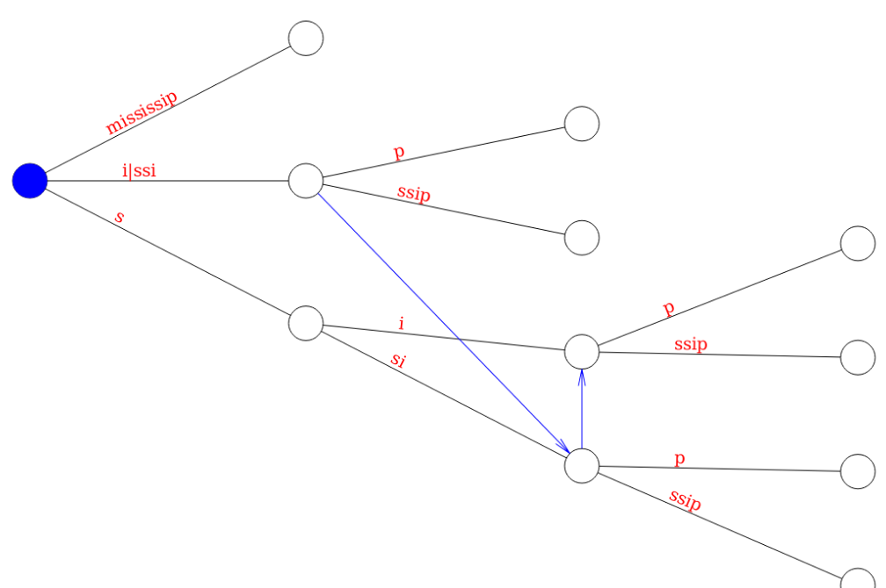
And, finally, 'si' -> 'i':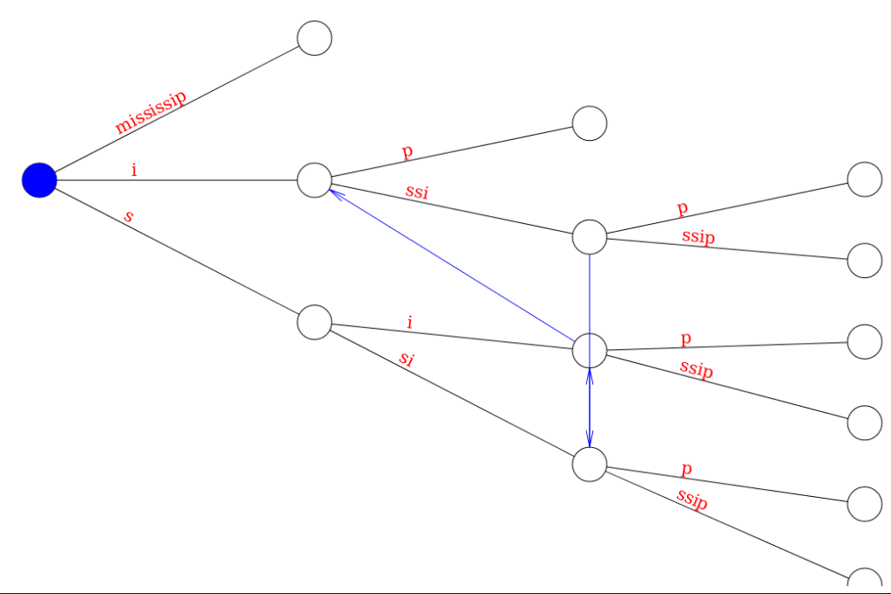
Let's check how we use suffix refs. Lets prolong the string so that algorithm climbs onto one of the branches that has suffix ref and see how it works, f.e. "mississipississt". Here is suffix tree for "mississipississ"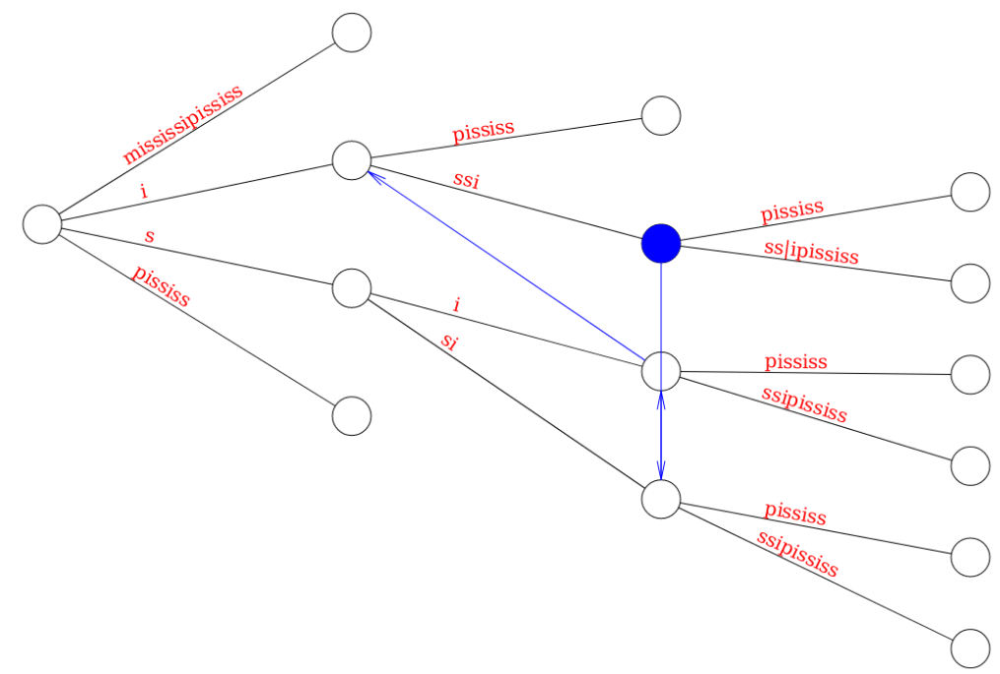
See we climbed up suffix "ississ". Now we don't have any branches that represent the suffix and sub-suffix. First step is to create a branch for "ississ":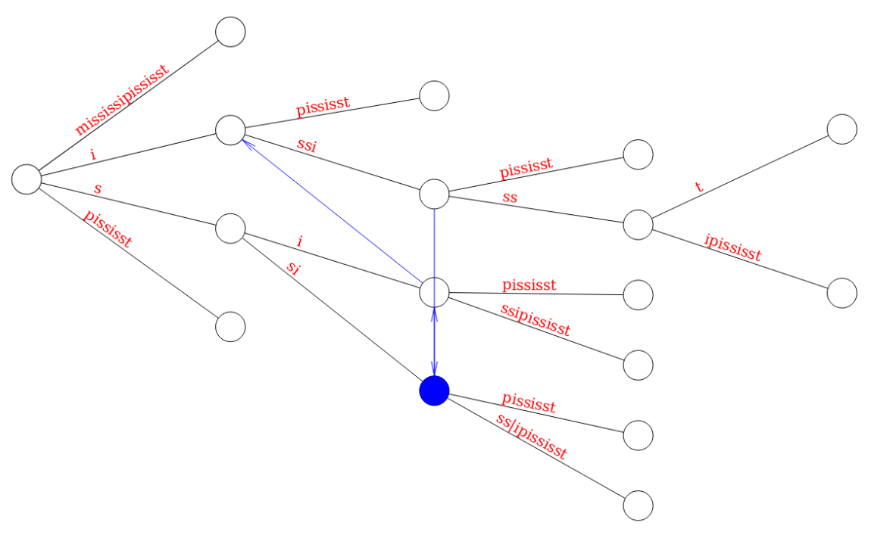
A node that represents "issi" has a suffix reference to "ssi", so algorithm mowes there, keeping current branch index and local branch index the same. Now the path represents "ssiss", and we go on down to "is" suffix.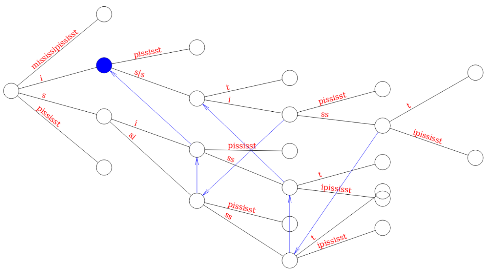
Till the moment we jumped by suffix references and the last suffix we created is "iss". Active node represents "i", current branch represented "ss". After adding last branch active node is the same, and current branch represents "s". We actially took subsuffix, but it happens that current branch is the same (because we have double s). Otherwise we would switch to another branch. The last thing we do is adding "t" suffix.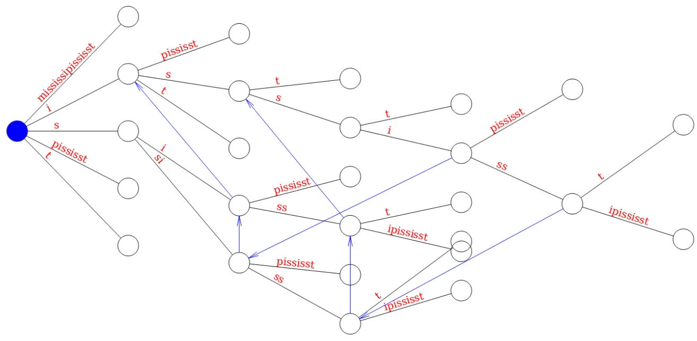
The part the author didn't get
There is a thing I find strange in this algorithm. Let's analyze the following case: we are building a tree for a word "mississipississt". We have just added suffix 'iss' ("mississipiss|iss"), and switching to a part we gonna split a branch ("ss" suffix). Here is out initial position:
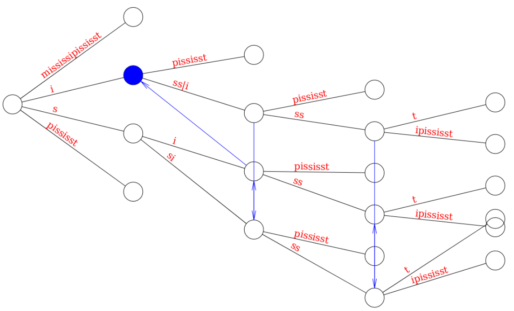
The path to active node is 'i', current branch represents "ss" part of the string. Cool. Let's increase current branch index, and we will see that we are on the same branch. So he have 'i' for path up to active node + 's' for current branch. However, the suffix we are currently gonna build up is "ss"! I didn't find anything better then to traverse "ss" suffix from the root node for that case. Let me know if you find out how to deal with this situation properly. So my final code for splittion looks like that:Conceptions: climbing up
Every time algorithm grab the letter it has in next position, you may think of it the following way:
- the path from root to current position is a suffix that has already been in the text. It is repeated substring.
- there is no path from root to the end of trie for that particular suffix so far. The 'remaining' variable shows us the length of that suffix.
- When we add unique character to the trie we trigger a mechanism of creating suffix path for all suffixes. Try building up "mississip" example: before 'p' letter is put there is no path 'issi' suffix. Adding 'p' fixes it.
- In the very end unique symbol is added to the trie. Why?
Usage
Ok, we implemented algorithm, now what to do with it? We can now find, for example, longest repeated substring. Think of the trie the following way: Once we created traversed a string (f.e "ississ"), it is represented by a path from root up to leaf node.
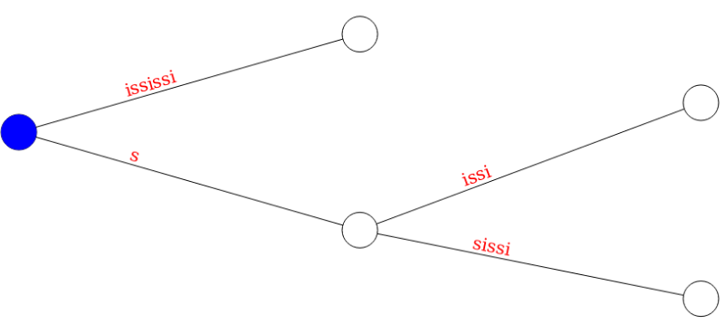
So the next time this substring appears in text we gonna climb onto that path and create internal node. A path to any internal node is a repeated substring.References: